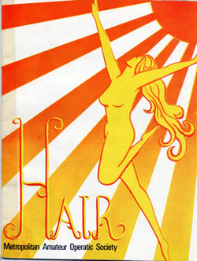
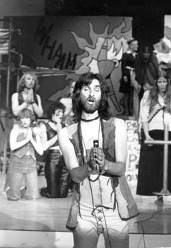
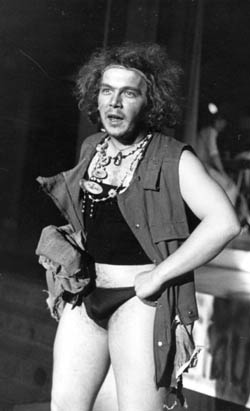
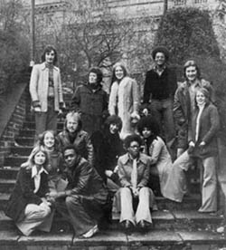

Chapter 2. Hair (The Metropolitan Amateur Operatic Society)
 The basic story line of Hair revolves around a character called Claude who is the leader of a group of free spirited people, brought into conflict with the establishment as represented by their parents. The group rebel against everything considered taboo by their parents. They were told to cut their hair short, they grew it long. They told they must not have sex before marriage, they had free love. They were told they must conform, they didn't.
At this point mention must be made of this unique version of Hair, unique because Chris, seeing a parallel between Claude's family, and the notorious mass murderer Charles Manson who established his own group of followers and like Claude got them to do his every bidding. Including the murder of an entire group of friends having a party one evening including the eight months pregnant famous actress Sharon Tate.
Chris Fogg, spotting the parallel decided to add various references of his own which combined the two elements. Whereas the original script was all love and peace, our version had a darker, and gradually escalating evil side of it, which came out more and more as the show progressed. This created several alarming and indeed electric moments that made for compelling watching. It also landed us all in deep doo - doo because the copyright owners got to hear and were not pleased.
 The show went on regardless however, but it was a close run thing! The cast members numbered more than 24 with a band of 5. I directed on electric piano, Dave Sayer was Organ and Synths, Neil Tomkinson was drums, Chas Coghill was lead guitar, and Mike Bonwick was bass. The main players were Nicky Baird as Berger, Chris Hawley as Woof, Mike Cheesman as Claude, Louis Grant as Hud, Alison Davis as Sheila, Mary Clark as Jeannie, Janice Jackson as Chrissie, and Garyk Barnett as the Commentator. There were 13 other members of Claude's 'family' and the 6 parents. The remarkable and, for many of us, quite unexpected outcome of the 6 or so months together, was a camaraderie, a closeness, a love if you wish to call it that, of everyone else in the show. I was always a loner, brought up as an only child, and so used to my own company most of the time. It fuelled and aided my musical side, no doubt, but left me unprepared for the quite devastating feelings of love I held for everyone in the show, the show in that few months became my life, my reason for living, and everyone in it felt the same for me, as I was responsible for all the music and there was a ton of it.
The music hardly stopped, and there were loads of songs in it. So everyone looked up to me for musical guidance. It was the first time that that had ever happened to me, and it helped me in so many countless ways for my future. I can only wonder at the apparent chance events that brought me to that party so many years ago, and changed my whole life forever. My memories of that week of the show, which was at the Altrincham Garrick Theatre, 16th to the 21st February 1976, would take up another 100 pages, so that is obviously not practical, but a few smatterings may suffice to whet your appetite, and give you a flavour.
 For instance, the sheer power of the chorus vocals on Aquarius with those devastatingly high notes sung by Jan and Ally.
Nicky Baird's incredible acrobatics as Berger, and his nightly leap across the pit into the audience where he would, as Berger, harangue them for money.
The fabulously funny scene of Maurice Service's, one of the parents 'Oh my God, she's gonna sing!'
Or the heartbreaking final scene where Berger is left on stage on his own, realising that everything has gone wrong, and nothing can ever be the same again, whilst the chorus were off stage on mikes singing the harmonies.
This scene was especially poignant on the last night, because we were all expecting that this was it, it was all going to end, and as I from my place in the side of one of the wings looked over at the opposite side, I could see them all singing, and crying at the same time, with Graham Brittain having to hold up two of the girls, one on each shoulder, they were that upset. Over the top, you might think? Typical theatrical types getting over emotional? Not a bit of it ! You really had to be there. It proved to be an incredible success on nearly every level, and the press reports were in nearly every case highly enthusiastic, and complementary.
And the nude scene? Well it was the only song in the show that I, from my vantage point at the side of the stage directing from the piano, learnt to play without looking at the music!!!
 So what remains of the show now? Some incredible photographs which really capture the essence of the whole event most successfully, and which you can see here, a live recording done on a stereo cassette recorder stood in the stalls, which is pretty good, except for the dialogue at the back of the stage, which is a bit distant on the tape, and the memories of a video that was done by a company, which we had the option to buy. I have clear memories of us all sitting round a TV with a hired video recorder, and seeing the recording, and then being told we could buy it for (I think) £50.Now, this (1975) was a time when video recorders were as rare in ordinary households as unicorn dung, so regrettably we let it go back, to be forever wiped. If only I had my time over again, we would today have a permanent record of the show, but alas not!
So that was the end of the Metropolitan version of Hair, so what happened to create Genesis Theatre?